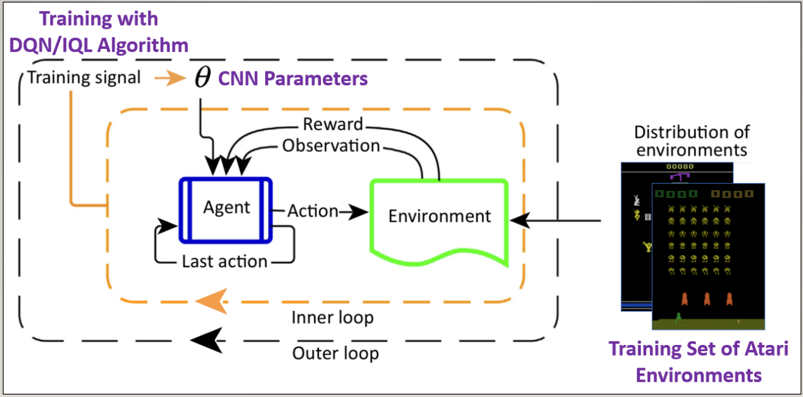

Description of the Project
Title of the Project
Extending Generalization in Reinforcement Learning
Topic of the Project
I decided to fully focus on the concept of generalization using different Atari environments since I
already wrote two different CNN policies for different Atari environments.
Generalization usually means to be able to perform well on similar unseen tasks. We realize that the standard reinforcement learning only uses one environment to train the agent, which
can facilite overfitting. Therefore, by extending the concept of generalization, we decide to introduce
different environments (tasks) to the agent in order to learn more efficiently a new Atari environment
(motivation of meta reinforcement learning). Our goal is here to let
the agent train on three different games and it needs to learn the fourth game by itself based on its
trained policy.
Figure
Illustration of Meta-Learning Approach in RL

Language and Main Libraries
Programming Language: Python 3.7 with Anaconda virtual environment
GYM: Standard API for reinforcement learning and collection of Atari environments
RLKIT: Library for Reinforcement Learning Algorithms and Experiment for Atari environments
DOODAD: Library for launching Atari experiments on different machines.
IDEs and Software Used in This Project
Pycharm: For debugging issues related to preprocessing of Atari environments and local experiments.
VSCode with ssh extension: For debugging actual Atari experiments while connecting to the lab computers.
Docker: For running experiments inside a nvidia-docker image.
Setup for Experiments
Which computers are you working on?
Local: Virtual Machine Ubuntu version 22.04
Lab Computer: Glen's lab computers (Blue and Green) accessed through ssh with a GPU (NVIDIA RTX A4000)
How do you execute an experiment?
In the remote computer, I created a nvidia-docker image for my Atari experiment and I run the python
file by using that image.